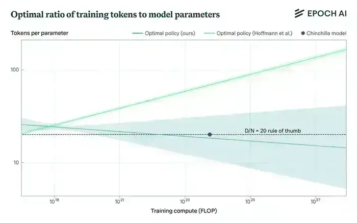
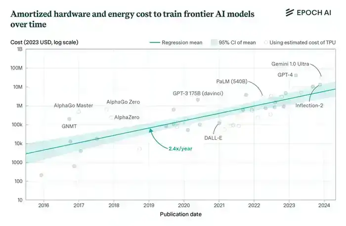
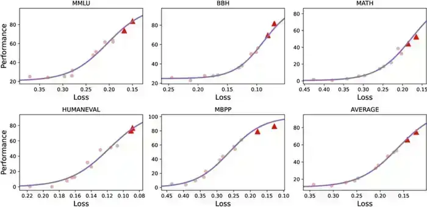

What the laws say
Work from OpenAI in 2020 showed that language-model loss follows a power law in parameter count, dataset size and compute, with smooth curves across an enormous range. That made it possible to predict the performance of a large model from small, cheap experiments.
Maps, diagrams and images






The Chinchilla result in 2022 corrected the recipe: for a fixed compute budget, models were badly undertrained. Given the same compute, a smaller model on more data beats a larger model on less. Most of the industry's subsequent training runs follow that arithmetic.
More recently the same logic has been applied to inference: spending more compute at generation time — sampling many candidates, or letting a model think longer — improves results on reasoning benchmarks along a similar curve.
Where it gets murky
Loss is not capability. The laws predict cross-entropy on held-out text, not whether a model can do arithmetic, follow instructions or avoid fabricating citations.
Emergence is contested. Claims that abilities appear suddenly at certain scales were challenged in 2023 by work showing that with better metrics many 'emergent' jumps become smooth curves. Some discontinuities are real; the methodological dispute is not settled.
The curves have limits. Data quality, data exhaustion, and the returns from reinforcement learning and tool use are not captured by the original three-variable fits.
Reliable: within a model family and a data distribution, more compute predictably lowers loss. That is engineering gold — it tells you what a bigger run will cost and roughly what it will get.
Unreliable: extrapolating from loss to usefulness, and extrapolating past the regime where the fits were made.
Often misreported: 'scaling will solve it' is a bet, not a law. The laws are empirical regularities with measured exponents, not a mechanism.
The archive labels this live debate because the regularity is documented and the interpretation — how far it takes you — is genuinely disputed.
Why it is in the archive
Because scaling is the central empirical fact of the current AI era, and because it is routinely cited as if it were a theory of intelligence.
Related: what models learn, AI risk.
Sources for this page
- Kaplan et al. (2020), scaling laws for neural language models, arXiv:2001.08361arxiv.org
- Hoffmann et al. (2022), Chinchilla, arXiv:2203.15556arxiv.org
- Schaeffer et al. (2023), are emergent abilities a mirage?, arXiv:2304.15004arxiv.org
- Wikipedia, “Neural scaling law” — findings and criticismen.wikipedia.org
Open resources on this topic
- BookNASA Technical Reports Server (NTRS) 19870014065: Centrifuge impact cratering experiments: Scaling laws for no — NASA Technical Reports Server (NTRS) · 1987 (Internet Archive, free to read)
- BookSLAW, a package for Scaling LAWs from statistical data Version (Internet Archive, free to read)
- BookDTIC ADA123659: Energy Scaling Laws for the Racetrack Induction Accelerator. — Defense Technical Information Center · 1982 (Internet Archive, free to read)
- PapersOpen-access articles: DOAJ · PubMed Central · Internet Archive Scholar
- BooksPublic-domain and borrowable copies: Open Library · Project Gutenberg · Google Books
Cite this page
Momin, S. (2026). Scaling Laws. The Larger World Archive. https://drsamonline.github.io/LARGE_GLOBE/scaling-laws.htmlMomin, Sohil. “Scaling Laws.” The Larger World Archive, 2026, https://drsamonline.github.io/LARGE_GLOBE/scaling-laws.html.Momin, Sohil. “Scaling Laws.” The Larger World Archive, 2026. https://drsamonline.github.io/LARGE_GLOBE/scaling-laws.html.@misc{scaling2026scaling,
author = {Momin, Sohil},
title = {Scaling Laws},
year = {2026},
howpublished = {The Larger World Archive},
url = {https://drsamonline.github.io/LARGE_GLOBE/scaling-laws.html},
note = {Last reviewed 20 November 2026}
}Last reviewed 20 November 2026 · Corrections policy · this page is not peer reviewed